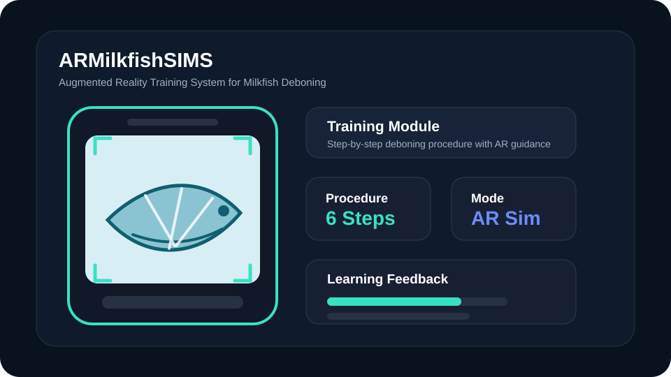
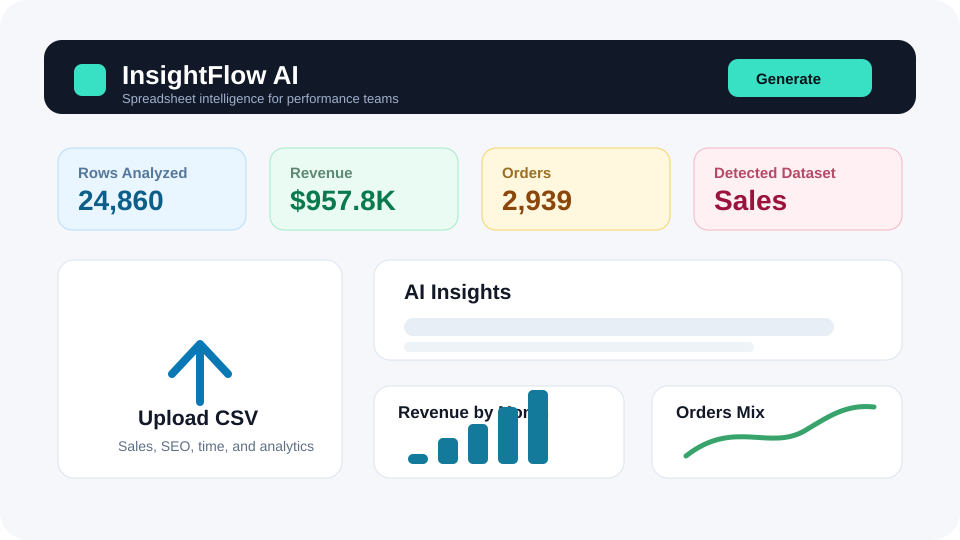
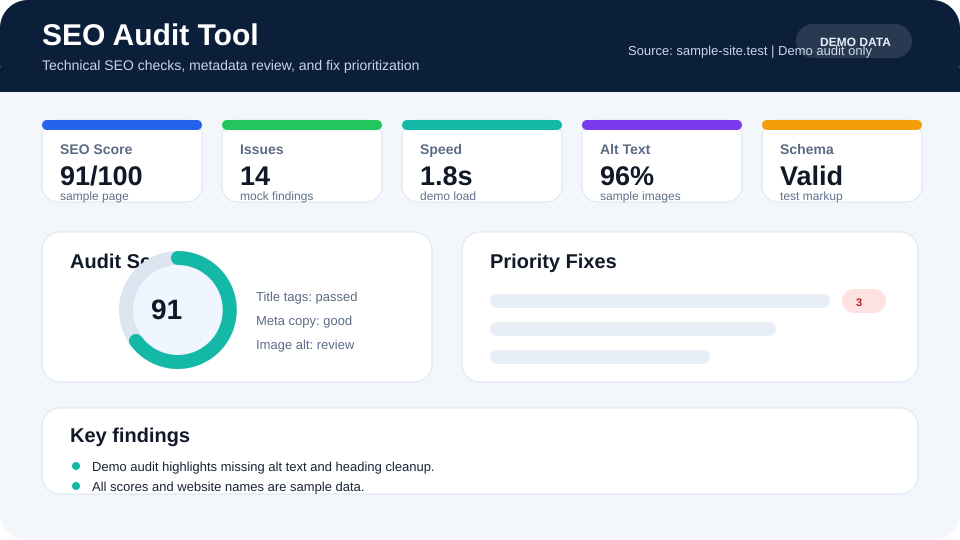

Business-ready developer
I focus on systems employers recognize: dashboards, portals, SEO tools, payroll workflows, client operations, and proposal automation.
View ProjectsOpen to web developer, SEO, AI tools & remote support roles
<Web & Mobile Developer| />
Information Technology graduate — Cum Laude — building business-ready web systems, AI-assisted tools, SEO dashboards, and automation workflows that help teams save time, understand data, and serve clients better.
const developer = {
name: 'John Paul Bantillo',
role: 'Web Developer',
honor: 'Cum Laude',
stack: ['JS', 'PHP', 'C#', 'Java'],
focus: ['AI Apps', 'SEO Tools', 'Business Systems'],
builds: ['Dashboards', 'Portals', 'Automation'],
remote: true,
available: true
};This homepage is a quick snapshot. The full details live in the dedicated About, Services, Skills, Projects, FAQ, and Contact pages.
I focus on systems employers recognize: dashboards, portals, SEO tools, payroll workflows, client operations, and proposal automation.
View ProjectsI combine development fundamentals with customer-support experience, admin organization, and clear communication.
About MeI can help with web development, SEO, AI-assisted workflows, virtual assistance, and customer-facing operations.
See ServicesThe goal is not just to show that I can code. The goal is to show that I can understand a workflow and design a useful solution around it.
The full Projects page has seven project details. These three give a fast preview of the direction.

An augmented reality training system designed to teach milkfish deboning through guided simulation, interactive procedure flow, and visual learning support.

A spreadsheet intelligence dashboard that turns CSV or Excel files into KPI cards, charts, executive summaries, and PDF-ready reports for sales, marketing, employee time, and operations data.

A practical audit tool for reviewing page titles, meta descriptions, headings, links, image alt text, performance signals, and technical SEO issues in one organized report.
The Projects page includes all seven systems with clearer business value, use cases, and project details.
I am still early in my career, so I make the signal clear: I can learn fast, communicate well, and build around business needs.
Cum Laude graduate with a web and mobile application development background.
BPO and support experience trained me to listen carefully, document clearly, and stay calm with real users.
My portfolio is intentionally shaped around systems companies recognize and can imagine using.